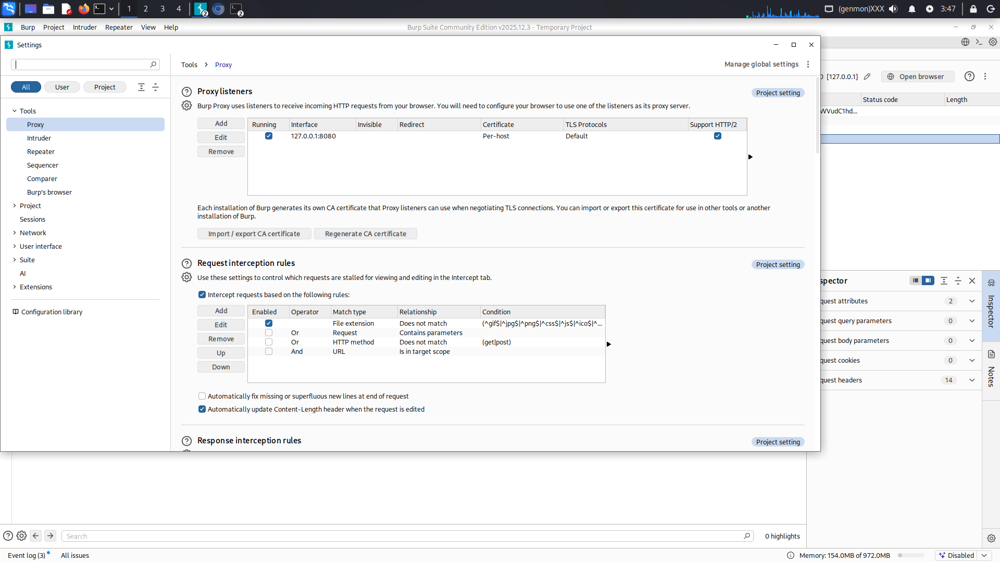
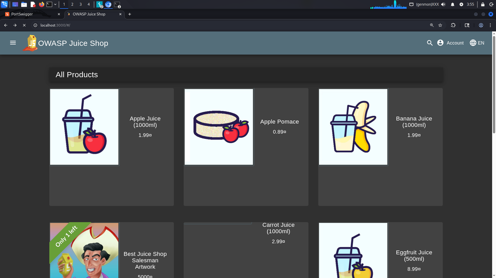
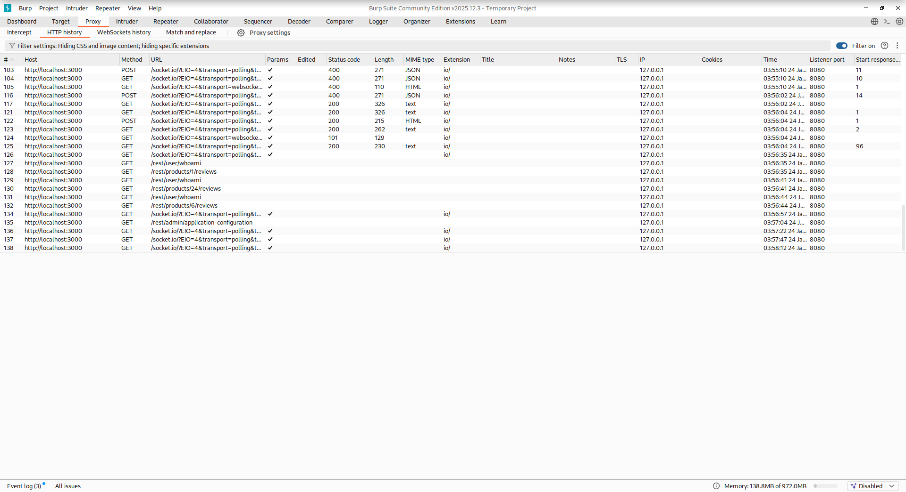
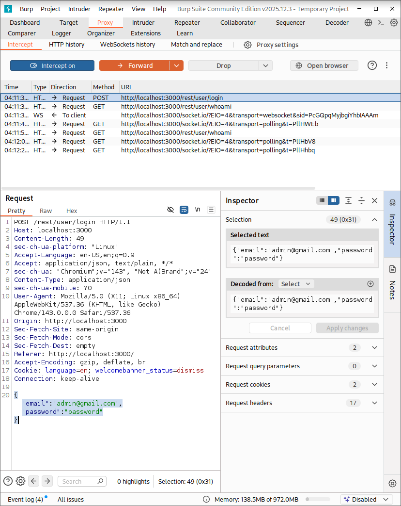
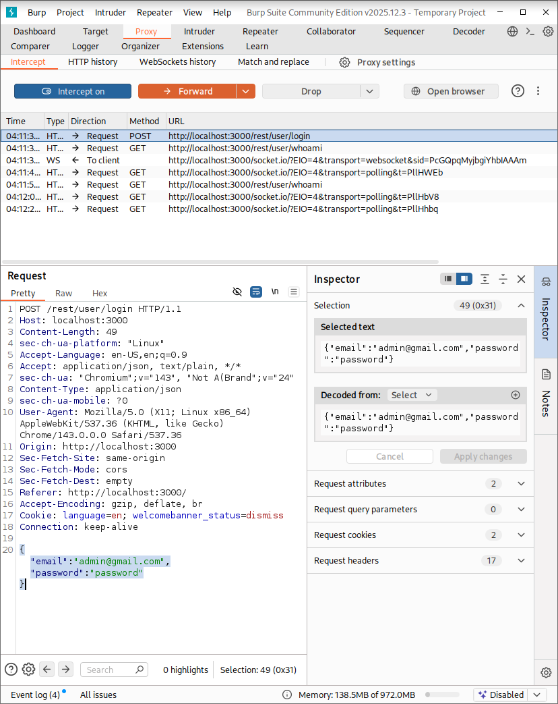
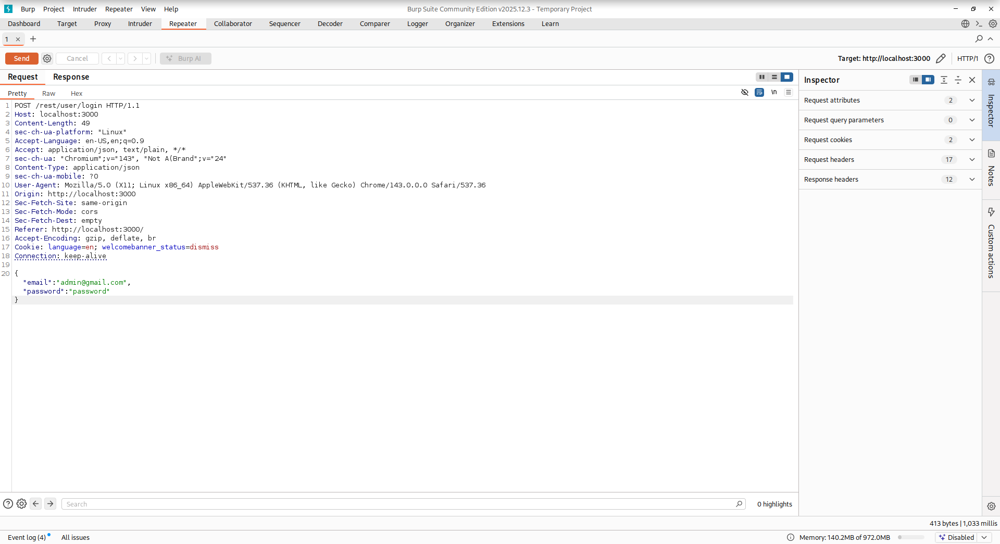

OWASP Juice Shop – Burp Suite Authentication Analysis
Project Type: Independent Security Lab
Focus: HTTP Interception, Authentication Analysis, Request Replay
Tools: Burp Suite Community Edition, Docker, Kali Linux
Overview
This project demonstrates the use of Burp Suite Community Edition to intercept,
analyze, and replay authentication traffic for OWASP Juice Shop, a deliberately
vulnerable web application. The objective was to showcase practical skills in configuring an
intercepting proxy, capturing sensitive HTTP requests, and interacting directly with backend
endpoints using professional penetration testing workflows.
This lab was conducted independently and is intended for portfolio and project-based
evaluation, reflecting methodologies commonly used in bug bounty hunting and web application
security testing.
Lab Environment
- Operating System: Kali Linux (Debian-based)
- Target Application: OWASP Juice Shop
- Deployment: Docker container
- Target URL:
http://localhost:3000
- Web Proxy: Burp Suite (Community Edition)
- Browser: Burp Suite built-in browser
Scope of Testing
- Configuration of Burp Suite as an intercepting proxy
- Capture and inspection of HTTP requests
- Interception of authentication traffic
- Replay and analysis of requests using Burp Repeater
- Observation of backend authentication responses
Methodology
- Proxy Setup: Verified Burp proxy listener running on
127.0.0.1:8080.
- Traffic Routing: Used Burp built-in browser to avoid localhost proxy bypass.
- Request Capture: Monitored HTTP history to confirm traffic interception.
- Authentication Interception: Captured login request at the correct execution stage.
- Request Replay: Sent the captured request to Burp Repeater for backend interaction.
Key Findings
- Authentication requests are transmitted via structured POST requests to a REST endpoint.
- Credential data is observable and testable once intercepted.
- Burp Repeater enables full backend interaction independent of the frontend UI.
- Successful login access was achieved, confirming effective control over the authentication flow.
Screenshot Evidence
Screenshot 1: Proxy Listener Configuration

Burp Suite proxy listener running on localhost (127.0.0.1:8080), confirming correct interception setup.
Screenshot 2: Target Application in Burp Browser

OWASP Juice Shop loaded using Burp’s built-in browser to ensure all traffic is routed through the proxy.
Screenshot 3: HTTP History Capturing Application Traffic

Captured HTTP requests generated by the target application, validating successful proxy interception.
Screenshot 4: Intercepted Authentication Request
 

Login request intercepted in real time, exposing request method, endpoint, headers, and payload.
Screenshot 5: Authentication Request in Burp Repeater

Captured login request loaded into Burp Repeater for controlled replay and testing.
Screenshot 6: Server Response in Burp Repeater

Backend server response observed after replaying the authentication request, confirming backend interaction.
Conclusion
This project demonstrates a solid understanding of web proxy tooling and authentication traffic analysis.
The ability to intercept, replay, and analyze sensitive requests reflects skills directly applicable to
real-world bug bounty hunting and penetration testing engagements.